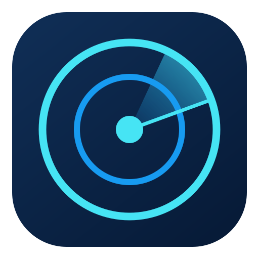
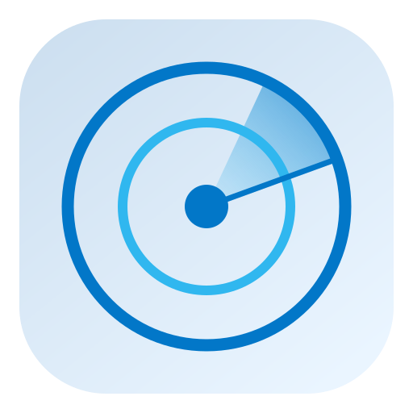
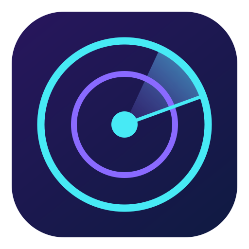
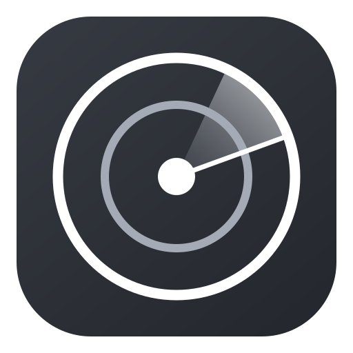
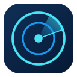

四个视觉方向

精密蓝 · 推荐
轮廓清楚，适合常驻工具。

浅色玻璃
适合浅色阅读环境。

渐变霓虹
更鲜明的科技风格。

单色印章
适合低彩度界面与品牌印章。
原尺寸辨识检查
16–24px 使用简化双元素轮廓：外环、扫描扇形与中心点。32px 起保留双环。以下按实际像素显示。
16 px20 px24 px32 px48 px64 px
128 px256 px 资源规格
| 资源 | 交付内容 | 使用位置 |
|---|
| SVG 正稿 | 512 × 512，圆角底板，透明四角 | 品牌母稿 / 关于页 |
| PNG | 16 / 20 / 24 / 32 / 48 / 64 / 128 / 256 / 512 / 1024 px，RGBA | 桌面、任务栏、预览 |
| ICO | 内含 16–256px 共 8 个尺寸 | Windows 可执行文件图标 |
| 透明标记 | SVG + 512px PNG，无底板 | 界面内标识 |
UI 交接要点
所有界面参考图都属于演示设计。余额使用 %；今日追加与期望收益使用「周额度百分点」。软上限表达约束，不能作为负数相加。公告必须标注「计划、尚未确认发生」。卡数未知与零张分别显示「卡 —」及「卡 ×0」。详见 handoff 文件夹中的语义纠偏与接入说明。
现有六张界面参考
本页可离线打开。图标为设计资源交付，尚未接入或编译原应用。